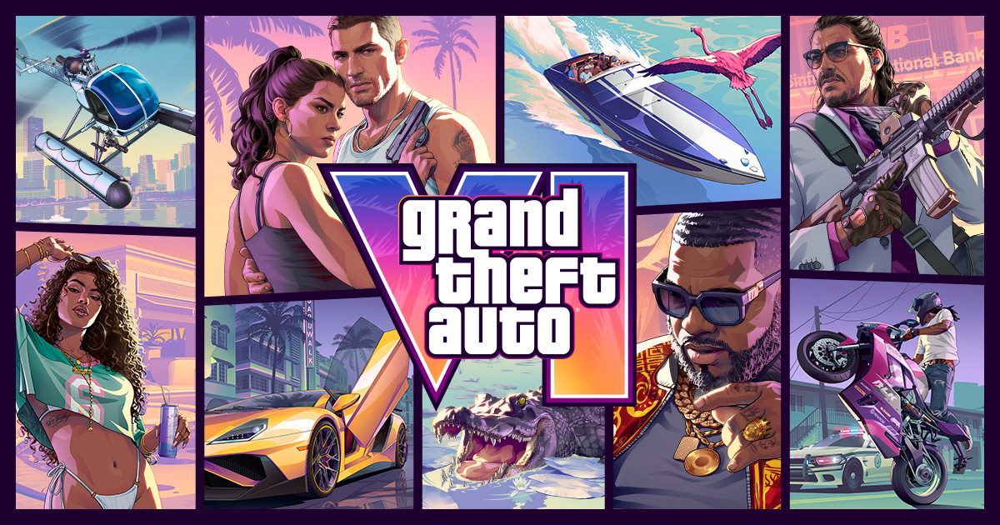

GTA6 사전 다운로드 11월 12일부터, 디지털·실물 코드로 받는 법
GTA6 예약을 걸어 두고 나니 다음 궁금증은 '출시일에 바로 켜려면 언제부터 받아 둘 수 있지?'더라고요. 달력을 세어 보니 오늘 10월 31일 기준으로 사전 다운로드가 열리는 11월 12일까지 12일, 출시일인 11월 19일까지는 19일 남았네요. 그래서 디지털로 예약하신 분과 실물 박스로 예약하신 분이 각각 어떻게 미리 받는지, 공식 스토어에 나온 내용을 기준으로 정리해 봤어요. 예약 특전과 에디션 차이는 지난 글에서 다뤘으니 여기서는 '받는 법'에만 집중할게요.

록스타게임즈 스토어의 GTA VI 예약 구매 페이지 대표 이미지예요. 사전 다운로드 날짜 문구가 올라와 있는 바로 그 페이지랍니다.
이미지 출처: Rockstar Games, 록스타게임즈 스토어 GTA VI 페이지 · 네이버 본문엔 받아서 재업로드 권장
GTA6 사전 다운로드는 언제부터 받을 수 있나요
GTA6 사전 다운로드는 2026년 11월 12일에 시작하고, 정식 출시는 일주일 뒤인 11월 19일이에요.
록스타게임즈 스토어 한국어 페이지에 '2026년 11월 12일 사전 다운로드 시작'이라고 적혀 있고, 6월 24일 루리웹 보도도 같은 일정이에요. 정확한 시작 시각은 아직 안내가 없어서, 당일 스토어 표기로 보시는 게 가장 정확해요. 사전 다운로드는 파일을 미리 받아 두는 단계이고 플레이가 열리는 날은 따로 11월 19일이에요. 12일에 받아 두면 19일에 설치를 기다리지 않고 시작하는 게 목표죠. 디지털과 실물이 어떻게 다른지는 표로 먼저 볼게요.
| 구분 | 디지털 예약 | 실물 패키지 |
|---|---|---|
| 받는 방식 | 구매한 스토어에서 바로 사전 다운로드 | 상자 속 다운로드 코드로 사전 다운로드 |
| 디스크 | 해당 없음 | 상자에 포함되지 않음 |
| 사전 다운로드 | 11월 12일 | 코드로 11월 12일 사전 다운로드 |
| 바로 플레이 | 11월 19일 | 11월 19일 |
디지털과 실물, 이렇게 고르면 돼요
· 11월 12일에 가장 먼저 받고 싶다면: 디지털이 맞아요. 배송을 기다릴 일이 없어서 구매한 스토어에서 바로 받는 쪽이 일정이 단순해요.
· 상자와 코드를 손에 쥐고 싶다면: 실물이 맞아요. 디스크는 없지만 사전 다운로드 코드가 든 상자가 오니까 소장하는 맛은 남아요.
공식 스토어에 적힌 사전 다운로드 날짜 표기예요.
디지털 예약 구매자는 11월 12일에 뭘 하면 되나요
디지털로 사전 주문하셨다면 11월 12일부터 사전 다운로드를 받고, 출시일인 11월 19일에 바로 플레이하실 수 있어요.
코드를 따로 넣을 일이 없다는 게 디지털의 장점이에요. 구매한 스토어 기준으로 11월 12일부터 받기 시작하고, 출시일인 19일에는 이어서 바로 켜는 흐름이에요. 어느 메뉴에서 받는지는 아직 안내가 없어서, 아래에 따로 적어 뒀어요.
실물 구매자는 디스크 없이 어떻게 받나요
실물 패키지 상자에는 디스크가 없고, 11월 12일 사전 다운로드를 지원하는 다운로드 코드만 들어 있어요.
실물이라도 디스크 대신 코드가 들어 있다는 공식 안내 문구예요.
실물로 예약했어도 결국 받는 건 디지털 파일이고, 박스는 코드를 담은 그릇에 가까워요. 그래서 실물 쪽은 '코드를 언제 손에 쥐느냐'가 일정을 가르는 변수예요.
해외 판매 실물을 사실 때는 지역부터 보세요. 록스타 스토어 FAQ에 PlayStation 코드는 지역 제한이 있다고 나와 있고, 미국·캐나다 등으로 배송된 구매품은 해당 국가에 등록된 PlayStation 계정에서만 정상 작동한다고 해요. 그래서 국내 계정에서 쓸 수 있는 코드인지 먼저 확인하고 사시는 게 좋아요.
설치 용량과 시각은 몰라도 출시 전에 준비할 것
설치 용량과 사전 다운로드 시작 시각은 아직 공식 안내가 없고, 발표되면 이 글을 갱신할게요.
수치가 나오기 전에는 맞춰 둘 기준이 없으니까요. 아직 안내가 없는 건 이 다섯 가지예요.
- 설치 용량
- 한국 시각 기준 사전 다운로드 시작 시각
- 디지털 구매자의 메뉴 경로와 자동 내려받기 여부
- 한국에서 실물 박스가 도착하는 시점
- 실물 코드를 입력할 수 있는 시점, 입력 화면 경로, 유효기간
이 다섯 가지와 상관없이 지금 해 둘 수 있는 준비는 이렇게 세 가지예요.
| 준비 | 이유 |
|---|---|
| 본체 저장공간 비우기 | 공식 용량이 나오기 전이라 여유가 있는 쪽이 마음 편해요 |
| 예약 계정 로그인 확인 | 디지털 구매 내역은 그 계정에 묶여 있어요 |
| 실물 코드 보관 | 사전 다운로드에 쓰는 열쇠가 그 코드뿐이에요 |
자주 묻는 질문
Q. 어떤 기종에서 사전 다운로드를 받나요?
PS5와 Xbox Series X|S로 안내돼요. PC는 아직 안내가 없어요.
Q. 에디션에 따라 사전 다운로드 날짜가 달라지나요?
에디션별로 날짜가 다르다는 안내는 없고, 스토어 에디션 비교표에도 같은 사전 다운로드 문구가 적혀 있어요. 에디션과 특전 차이는 아래 같이 보기의 예약 특전 글에 정리해 뒀어요.
GTA6 사전 다운로드 정리
저라면 11월 12일에 서두르기보다 느긋하게 받아 두겠네요. 용량 같은 공식 수치가 나오면 다시 정리해서 들고 올게요. 출시일에 바로 달릴 수 있게 준비해 보세요 ㅎㅎ
✔ GTA6 같이 보기 좋은 내용
· GTA6 예약 차이 스탠다드 얼티밋 에디션 비교, 예약 특전은 어디까지 공통일까?
· GTA6 출시일 11월 19일 확정, 한국 가격 89,800원 PC 출시 여부 PS5 에디션 정리
· GTA6 사전예약 6월 25일 시작! 가격, 에디션, 출시일 정리, PC는?
참고한 곳 (2026.10.31 기준)
· 록스타게임즈 스토어 GTA VI 페이지
· 루리웹 6월 24일 보도